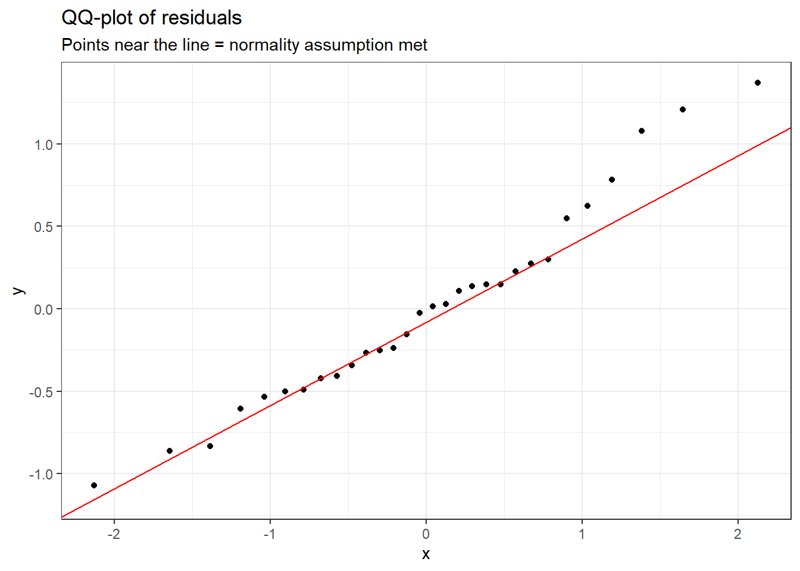
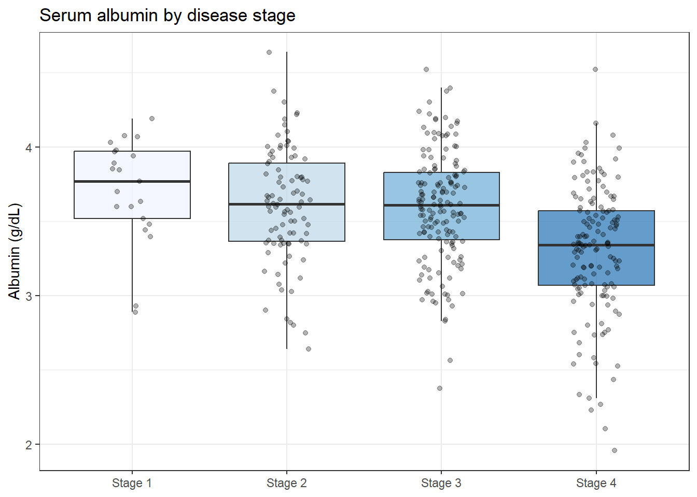

In a taught course, this session fits one teaching block. For self-paced study, split it into two sittings, e.g. Background and Example 1 first, Example 2 onward later. Exercise 3 is open-ended and works best as a follow-up using a dataset from your own field.
TipHow to Use the Code in This Session
Every code chunk below is written so you can copy it into your R console (or an R script) and run it yourself, in the order shown. Where you see a “Run It Yourself” box, stop and run the code above it before reading the explanation that follows.
ImportantBefore You Start
ANOVA extends the t-test to three or more groups. Make sure you have completed T-tests and Group Comparisons first: the logic here builds directly on the signal ÷ noise framework introduced there.
6.1 When Do You Use This?
Tip
You have a continuous outcome in three or more groups and you want to know whether the group means differ. Maybe you are comparing a biomarker across four disease stages, or a drug response across a control and three dose levels. The temptation is to run all possible pairs of t-tests. The problem: with four groups there are six pairs, and at α = 0.05 the probability of at least one false positive from six tests is 1 − 0.95⁶ = 26%. ANOVA tests all groups simultaneously in a single model and keeps the false positive rate at 5%.
NoteTeacher Note
Have the room verify 1 − 0.95⁶ = 26% on a calculator before moving on — it is easy to nod along to “26%” without registering how large that is. This is the same multiple-testing logic as Example 2 in Hypothesis Testing; if you taught that session, ask the room to connect the two before you explain ANOVA’s solution.
6.2 Learning Objectives
After completing this session you will be able to:
Explain what the F-statistic is and how it relates to the t-statistic
Run a one-way ANOVA in R and interpret the output table
Run Tukey’s HSD post-hoc test to identify which pairs differ
Fit a two-way ANOVA and interpret a significant interaction term
Check ANOVA assumptions using residual plots
6.3 Background: How ANOVA Works
Estimated time: ~20 minutes (reading)
NoteTeacher Note
Connect this back to the t-statistic from T-tests: for exactly two groups, ANOVA’s F-statistic equals the square of the two-sample t-statistic (\(F = t^2\)), and the ANOVA p-value equals the two-sided t-test p-value. ANOVA is the generalisation of the t-test to more than two groups, not a different idea.
6.3.1 The F-statistic is signal ÷ noise
In the t-tests session, the t-statistic was signal ÷ noise: the difference between group means divided by the standard error of that difference. The F-statistic follows the same logic but for multiple groups simultaneously:
\[F = \frac{\text{variance between group means (signal)}}{\text{variance within groups (noise)}}\]
A large F means the group means spread out more than would be expected from the natural variation within groups. Under the null hypothesis that all group means are equal, F follows a known F-distribution. A small p-value means “an F this large would be rare if the groups truly had the same mean.”
ANOVA works by partitioning total variation into two parts:
Between-group variation (signal): how much the group means deviate from the overall mean
Within-group variation (noise): how much individuals deviate from their own group mean
The ratio of these, after accounting for degrees of freedom, is the F-statistic.
6.3.2 The one thing ANOVA tells you, and the one thing it doesn’t
A significant ANOVA tells you at least one group mean differs from at least one other. It does not tell you which groups differ. That requires a post-hoc test (Tukey’s HSD is standard for ANOVA).
6.3.3 ANOVA assumptions
Assumption
How to check
Independence
Study design: each observation from a different subject
Normality of residuals
QQ-plot of model residuals (not raw data)
Equal variances
Check group SDs; use Welch’s ANOVA if unequal
ANOVA is reasonably robust to mild variance inequality, especially with balanced group sizes. With small, clearly non-normal groups, use Kruskal-Wallis instead (see Nonparametric Tests).
6.4 Example 1: One-Way ANOVA (PlantGrowth)
Estimated time: ~25 minutes (worked example)
NoteTeacher Note
After the boxplot (pg-setup), ask the room to predict, by eye, which of the three pairwise comparisons (ctrl vs trt1, ctrl vs trt2, trt1 vs trt2) will turn out significant in the Tukey output later. Most people correctly guess trt1 vs trt2 because that gap looks largest relative to the spread — a good opportunity to reinforce “signal relative to noise,” not just “signal.”
The PlantGrowth dataset records dried plant weight under three conditions: a control and two experimental treatments, with 10 plants per group.
Treatment 2 (trt2) looks higher and treatment 1 (trt1) looks lower than the control. Before running the test, notice this is the visual signal ANOVA will try to detect relative to the within-group scatter.
fit_pg <-aov(weight ~ group, data = pg)summary(fit_pg)
Df Sum Sq Mean Sq F value Pr(>F)
group 2 3.766 1.8832 4.846 0.0159 *
Residuals 27 10.492 0.3886
---
Signif. codes: 0 '***' 0.001 '**' 0.01 '*' 0.05 '.' 0.1 ' ' 1
TipRun It Yourself
Run the chunk above. You should get F ≈ 4.85 on (2, 27) degrees of freedom, with Pr(>F) ≈ 0.016. Below 0.05, so at least one group mean differs. Which one(s)? The table alone cannot say — that is what Tukey’s HSD is for, next.
NoteReading the ANOVA Table
Df Sum Sq Mean Sq F value Pr(>F)
group 2 3.77 1.88 4.85 0.016 *
Residuals 27 10.49 0.39
Column
What it means
Df (group = 2)
Degrees of freedom for groups = number of groups − 1 = 3 − 1 = 2
Df (Residuals = 27)
Degrees of freedom for error = total n − groups = 30 − 3 = 27
Sum Sq (group = 3.77)
Total variation explained by group membership
Sum Sq (Residuals = 10.49)
Remaining variation within groups (noise)
F = 4.85
The between-group variance is 4.85× the within-group variance
Pr(>F) = 0.016
If all groups had the same true mean, an F this large would occur 1.6% of the time
Conclusion: at least one group mean differs (p = 0.016). We do not yet know which pairs. That requires a post-hoc test.
6.4.1 Post-hoc comparisons: Tukey’s HSD
Tukey’s Honestly Significant Difference test performs all pairwise comparisons while controlling the family-wise error rate.
Run the chunk above. Only trt2-trt1 has adj.p.value ≈ 0.012, below 0.05. The mean difference is about 0.865 g (95% CI: 0.17 to 1.56). trt2-ctrl (adj.p ≈ 0.198) and trt1-ctrl (adj.p ≈ 0.391) are not significant. Did this match your prediction?
Read each row as a pairwise comparison: estimate is the mean difference, conf.low/conf.high is the 95% CI for that difference, and adj.p.value is the p-value adjusted for multiple comparisons. The trt1 vs trt2 contrast drives the overall significance.
6.4.2 Checking assumptions
Check two things: (1) are residuals approximately normal? (2) are group variances similar?
aug_pg <-augment(fit_pg)
Warning: The `augment()` method for objects of class `aov` is not maintained by the broom team, and is only supported through the `lm` tidier method. Please be cautious in interpreting and reporting broom output.
This warning is displayed once per session.
ggplot(aug_pg, aes(sample = .resid)) +stat_qq() +stat_qq_line(colour ="red") +labs(title ="QQ-plot of residuals",subtitle ="Points near the line = normality assumption met" ) +theme_bw()

pg %>%group_by(group) %>%summarise(n =n(), mean =mean(weight), sd =sd(weight))
# A tibble: 3 × 4
group n mean sd
<fct> <int> <dbl> <dbl>
1 ctrl 10 5.03 0.583
2 trt1 10 4.66 0.794
3 trt2 10 5.53 0.443
TipRun It Yourself
Run the chunk above. Means are ctrl ≈ 5.03, trt1 ≈ 4.66, trt2 ≈ 5.53; SDs are ctrl ≈ 0.58, trt1 ≈ 0.79, trt2 ≈ 0.44. The largest SD (0.79) is less than twice the smallest (0.44), so the equal-variance assumption is reasonable.
The residual plot shows no pattern (equal variance holds). The QQ-plot shows approximate normality. The group SDs are within a factor of 2 of each other. The ANOVA assumptions are met.
TipWhat if variances are unequal?
If group SDs differ markedly (roughly, if the largest SD is more than twice the smallest), use Welch’s ANOVA:
oneway.test(weight ~ group, data = pg, var.equal =FALSE)
Follow this with Games-Howell post-hoc tests rather than Tukey’s HSD.
6.5 Example 2: Two-Way ANOVA (ToothGrowth)
Estimated time: ~20 minutes (worked example)
NoteTeacher Note
This dataset also appears in Nonparametric Tests (comparing the two supplements at dose 0.5 only). Here the design is extended to all three doses, which lets the interaction term emerge. Before showing the interaction plot, ask the room what a “no interaction” plot would look like (two parallel lines), so the converging lines below stand out as a meaningful pattern rather than just “two lines that happen to be close.”
The ToothGrowth dataset is a 2 × 3 factorial experiment: two Vitamin C delivery methods × three dose levels, 10 guinea pigs per cell. This design lets us ask three questions simultaneously:
Does the supplement type affect tooth length? (main effect of supp)
Does the dose level affect tooth length? (main effect of dose)
Does the effect of dose depend on which supplement was used? (interaction between supp and dose)
The interaction question is the most interesting, and the most commonly misunderstood.
6.5.1 Visualise before testing: the interaction plot
An interaction plot shows the mean response at each dose level for each supplement. If the two lines are roughly parallel, the dose effect is similar for both supplements (no interaction). If the lines cross or converge, the dose effect differs by supplement, an interaction.
The lines are not parallel and converge at the highest dose. This suggests the benefit of orange juice over ascorbic acid is larger at lower doses, but the two supplements become similar at 2 mg/day. ANOVA will test whether this interaction is statistically meaningful.
fit2 <-aov(len ~ supp * dose, data = tg)summary(fit2)
Run the chunk above. All three rows are significant: supp (F ≈ 15.6, p ≈ 0.0002), dose (F ≈ 92.0, p < 2e-16), and supp:dose (F ≈ 4.11, p ≈ 0.022). Because the interaction term is significant, the two main effects cannot be interpreted on their own — see below.
NoteReading the Two-Way ANOVA Table
Row
What it tests
supp
Main effect: does supplement type affect length, averaged across doses?
dose
Main effect: does dose affect length, averaged across supplement types?
supp:dose
Interaction: does the effect of dose differ between supplements?
When the interaction is significant, the main effects alone are misleading. The story is more subtle: the effect of dose depends on which supplement you use. Report the interaction and show the plot: do not summarise by “supplement A is better” if it is only better at certain doses.
When the interaction is not significant, the main effects can be interpreted directly.
Run the chunk above. With 2 supplements × 3 doses there are 15 possible pairwise contrasts; the ten shown here are the most significant. The largest effect is dose 2-0.5 (estimate ≈ 15.5 mm, adj.p ≈ 4e-13): the dose effect dwarfs the supplement effect, consistent with dose having by far the largest F-statistic above.
6.6 What Can Go Wrong
Estimated time: ~10 minutes (reading)
NoteTeacher Note
Quick true/false round on the “Common misinterpretations” callout below — read each bold statement aloud and ask for a thumbs up/down before revealing the explanation. The “F = 12.4 means a large effect” item connects directly back to the η² discussion in “How to Report” later, so it’s worth flagging that effect size is still to come.
Running multiple t-tests instead of ANOVA
With four groups and six pairwise t-tests at α = 0.05, the chance of at least one false positive is 26%. This is not a minor concern: it means roughly one in four such analyses produces a spurious finding by chance. ANOVA + Tukey’s HSD keeps the family-wise error rate at 5%.
Ignoring a significant interaction in two-way ANOVA
If supp:dose is significant, reporting only the main effects is wrong. “Orange juice increases tooth length by 3.7 mm on average” is misleading if orange juice is only better at low doses. Always check the interaction term and plot the group means before summarising the results.
Claiming “all groups differ” after a significant ANOVA
A significant F-test means at least one pair differs. The post-hoc test identifies which ones. Stage 1 vs Stage 4 may differ significantly while Stage 1 vs Stage 2 may not.
Using ANOVA with very small, non-normal groups
With fewer than 10 observations per group and visibly non-normal residuals, use Kruskal-Wallis. ANOVA is robust to mild non-normality with larger samples but not with small, skewed groups.
WarningCommon misinterpretations
“F = 12.4 means a large effect” The F-statistic is not an effect size and depends on sample size. A large F in a study of 500 subjects may reflect a trivially small difference. Report η² (eta-squared = SS_between / SS_total) as the effect size: η² < 0.06 is small, 0.06–0.14 is medium, > 0.14 is large.
“ANOVA tests variances (it says so in the name)” ANOVA tests whether group means are equal by partitioning variance. It assumes equal within-group variances but does not test them. The name refers to the technique, not the hypothesis.
“A non-significant interaction means effects are purely additive” A non-significant interaction p-value may reflect low power rather than true additivity. Always plot the group means to see whether the pattern is consistent with your scientific interpretation.
6.7 Exercises
NoteTeacher Note
Pair students for Exercises 1 and 2: one runs the code while the other predicts each result (ANOVA significance, then which Tukey pairs will be significant) before it appears. Both exercises use the same pbc stage variable as Nonparametric Tests, so if you taught that session, ask the room to predict whether the ANOVA post-hoc pattern will look like the Kruskal-Wallis post-hoc pattern they already saw.
6.7.1 Exercise 1 (Guided): One-Way ANOVA for Bilirubin by Stage
Estimated time: ~20 minutes
Using survival::pbc, test whether log(bilirubin) differs across the four disease stages.
Plot log(bilirubin) by stage (boxplot + jitter, using scale_fill_brewer()).
Run aov(log(bili) ~ stage, ...). Report F, degrees of freedom, and p-value.
Run Tukey’s HSD. Which stage pairs differ significantly?
Extract residuals with augment() and plot a QQ-plot. Is the normality assumption met?
Run the chunk above. The ANOVA is highly significant (F(3, 408) ≈ 15.1, p ≈ 2.6e-09). Tukey’s HSD shows the same pattern seen with the Kruskal-Wallis post-hoc test in Nonparametric Tests: Stage 4 differs significantly from every other stage (all adj.p < 0.0001), while Stages 1, 2, and 3 do not differ significantly from each other (adj.p between 0.32 and 0.84). The residuals are approximately normal on the log scale, confirming the transformation was appropriate.
6.7.2 Exercise 2 (Semi-guided): ANOVA for Albumin by Stage
Estimated time: ~15 minutes
Using survival::pbc, test whether serum albumin differs across the four disease stages.
Plot albumin by stage.
Run aov(albumin ~ stage, ...) and report the key output numbers.
Run Tukey’s HSD. Which pairs are significantly different?
Check the residual QQ-plot.
Does the direction of the albumin effect make biological sense for a disease where liver function progressively declines?
TipExercise 2: Solution
pbc_s <- pbc %>%filter(!is.na(stage), !is.na(albumin))pbc_s %>%ggplot(aes(x = stage, y = albumin, fill = stage)) +geom_boxplot(alpha =0.7, outlier.shape =NA) +geom_jitter(width =0.15, alpha =0.3, size =1.5) +scale_fill_brewer(palette ="Blues") +labs(title ="Serum albumin by disease stage",x =NULL, y ="Albumin (g/dL)") +theme_bw() +theme(legend.position ="none")

fit_alb <-aov(albumin ~ stage, data = pbc_s)summary(fit_alb)
Df Sum Sq Mean Sq F value Pr(>F)
stage 3 8.88 2.9610 18.59 2.54e-11 ***
Residuals 408 64.99 0.1593
---
Signif. codes: 0 '***' 0.001 '**' 0.01 '*' 0.05 '.' 0.1 ' ' 1
Albumin falls with disease stage, consistent with declining liver synthetic function. The ANOVA is significant and post-hoc tests show early vs. late stage differences drive the result.
6.7.3 Exercise 3 (Open-ended)
Estimated time: 15–30 minutes
From your own data, identify a continuous outcome and a categorical grouping variable with three or more groups. Run a one-way ANOVA, check assumptions with residual plots, and run Tukey’s HSD. Write a complete Methods and Results paragraph as you would for a journal paper, including the F-statistic, degrees of freedom, p-value, and the specific group pairs that differ.
6.8 Comprehension Check
Estimated time: ~10 minutes (self-test)
What is the null hypothesis in a one-way ANOVA? What does a significant result tell you, and what does it not tell you?
Why is running multiple pairwise t-tests not a valid substitute for ANOVA?
In a two-way ANOVA, the interaction term supp:dose is significant. What does this mean, and how should you proceed?
Your residual QQ-plot shows clear non-normality and you have n = 8 per group. What should you do?
“ANOVA tests variances”: true or false, and why?
NoteAnswers
The null hypothesis is \(H_0: \mu_1 = \mu_2 = \ldots = \mu_k\): all group population means are equal. A significant result means at least one group mean differs from at least one other. It does not identify which pairs differ: that requires a post-hoc test.
Running \(\binom{k}{2}\) independent t-tests inflates the family-wise error rate. With k = 4 groups there are 6 comparisons; at α = 0.05, the probability of at least one false positive is 1 − 0.95⁶ = 26%. ANOVA tests all groups simultaneously, keeping the overall Type I error at 5%.
A significant interaction means the effect of one factor depends on the level of the other. Reporting only main effects is misleading: you must show the interaction plot and describe how the effect of dose changes across supplement types (or vice versa).
With small, non-normal groups, switch to Kruskal-Wallis: a nonparametric ANOVA alternative that works on ranks and does not require normality.
False. ANOVA tests whether group means are equal, using a technique that partitions total variance into between-group and within-group components. It assumes equal within-group variances, but the hypothesis being tested is about means, not variances.
6.9 How to Report
NoteReporting ANOVA Results
In a Methods section:
“Differences in [outcome] across [k] groups were tested using a one-way ANOVA. Post-hoc pairwise comparisons were performed using Tukey’s honestly significant difference (HSD) test to control the family-wise error rate at 5%.”
In a Results section:
“[Outcome] differed significantly across groups (F(2, 27) = 4.85, p = 0.016, η² = 0.26). Post-hoc comparisons showed that [group A] had significantly lower [outcome] than [group B] (mean difference: X.XX, 95% CI: L.L to U.U, adjusted p = 0.012).”
For two-way ANOVA with a significant interaction:
“There was a significant interaction between [factor 1] and [factor 2] (F(df, df) = X, p = Y). The effect of [factor 1] on [outcome] differed by level of [factor 2] (see Figure X).”
Always include:
F-statistic with numerator and denominator df, e.g., F(2, 27)
Overall p-value
Effect size η² (SS_between / SS_total)
Post-hoc test used, adjusted p-values for significant pairs
Group means and SDs in a table or figure
6.10 Further Reading
Bland (2015): An Introduction to Medical Statistics: clear treatment of one-way and two-way ANOVA for clinical researchers
Dalgaard (2008): Introductory Statistics with R: practical ANOVA chapter with worked examples
?aov, ?TukeyHSD, ?oneway.test in R
Bland, Martin. 2015. An Introduction to Medical Statistics. 4th ed. Oxford University Press.
Dalgaard, Peter. 2008. Introductory Statistics with r. 2nd ed. Springer.